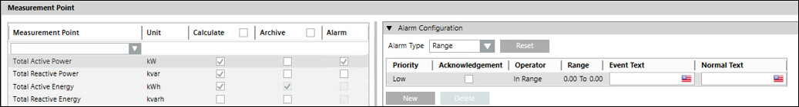
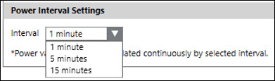

Sector Summary Configuration
In Engineering mode, when you select any sector in the Desigo CC node, you must first configure the parameters of the Sector Summary Configuration tab that displays when the respective sector is selected. Devices can be moved from one sector to another, and a summary calculation for all the devices in a sector is displayed when the sector is selected.
The following expanders allows you to configure the parameters of the sector Summary tab:
Sector Summary Expander
- Enable Configuration: Displays the summary configuration in the operating mode. Enabled by default when selecting the sector node.
Measurement Point
- Measurement Point: Displays the name of the measurement point. You can select the measurement point from the drop down list.
- Unit: Displays the unit of the measurement point.
- Calculate: Enable the checkbox to start the calculation.
- Archive: Enable the checkbox to archive the data for measurement points.
- Alarm: Enable the checkbox to activate Alarm Configuration for the corresponding measurement point.
Alarm Configuration
To activate workstation alarm for a measurement point, you must configure the following fields:
- Alarm Type: Allows you to select the type of alarm. The alarm configuration will vary based on the selected alarm type.
- Reset: Allows you to rest all alarm conditions from the table and reset the default alarm class.
- For the Range alarm type, the following configurations are possible:
Priority: Low, Medium, High, and Fault
Enable the Acknowledgement checkbox.
Operator:: In range, !.. : Not in range , || : OR, !|| : NOR
Range: The value, or range of values, for which an alarm is to be issued. - For the Limit alarm type, the following configurations are possible:
Priority: Low, Medium, High and Fault
Enable the Acknowledgement checkbox.
Operator: : > : Greater than , >= : Greater than or equal to , < : Less than, <= : Less than or equal to
Limit: User defined values
Operator: Allows you to select between the = and None options.
Upper Hysteresis: The upper range for the alarm value beyond which alarms will be generate.
Operator: Allows you to select between the = and None options.
Lower Hysteresis: The lower range for the alarm value below which alarms will be generated. - Event Text: The text to display when the alarm is issued.
- Normal Text: The text to display when the alarm ceases.
- New: Allows to add new rows with default alarm class and values.
- Delete: Allows you to delete the selected alarm row.

Include Devices
- Include Devices: Allows you to select the devices to be included in the calculations for the selected sector. It consists of the following columns:
- Include: Enable the checkbox to include the device. When the device is included by enabling the Include option in the sector, it will be enabled in both the system and the area
- Device Name: Displays the name of the devices in the selected area.
Power Interval Settings
It consists of Interval drop-down. Allows you to select the interval at which the power values are calculated.
The following intervals can be selected from the drop-down:
- 1 minute: Calculates the power at 1-minute intervals.
- 5 minutes: Calculates the power at 5 minute intervals.
- 15 minutes: Calculates the power at 15 minute intervals.
